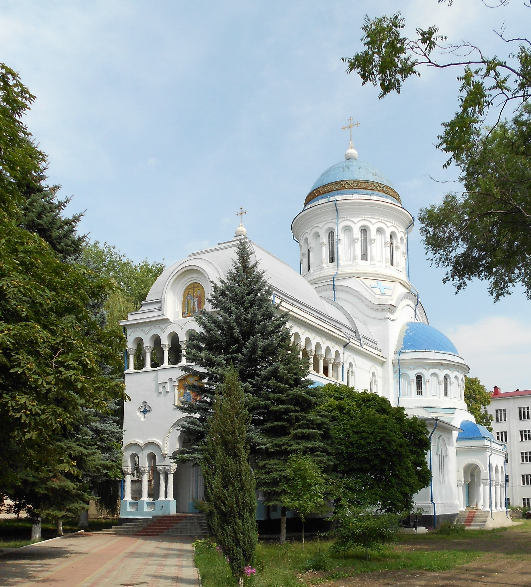

Atracții turistice
Monumentul lui Ștefan cel Mare

În inima capitalei de nord, reprezentată de Bălți, se înalță un monument impunător dedicat celui mai respectat domnitor din istorie — Monumentul lui Ștefan cel Mare. Acest gigant din bronz nu este doar un element decorativ al orașului, ci și un simbol important al mândriei naționale, cunoscut de fiecare locuitor al Republicii Moldova. Situat în Piața Independenței, chiar în fața clădirii primăriei, acest obiectiv face parte din cele mai importante monumente istorice ale țării. Statuia impresionează prin dimensiunile sale: figura de șase metri a domnitorului este amplasată pe un postament de cinci metri din granit natural, fiind cel mai înalt monument dedicat lui Ștefan cel Mare din țară.
Piața Vasile Alecsandri

Piața Vasile Alecsandri este piața centrală a orașului Bălți. Ea reprezintă principalul spațiu public al orașului, unde au loc importante evenimente culturale, politice și festivități, fiind considerată inima simbolică a municipiului.
Catedrala Sfinții Constantin și Elena

Catedrala Sfinții Constantin și Elena este unul dintre cele mai frumoase și importante lăcașuri de cult din orașul Bălți. A fost construită în anul 1990 și reprezintă un important centru religios și cultural pentru credincioși.